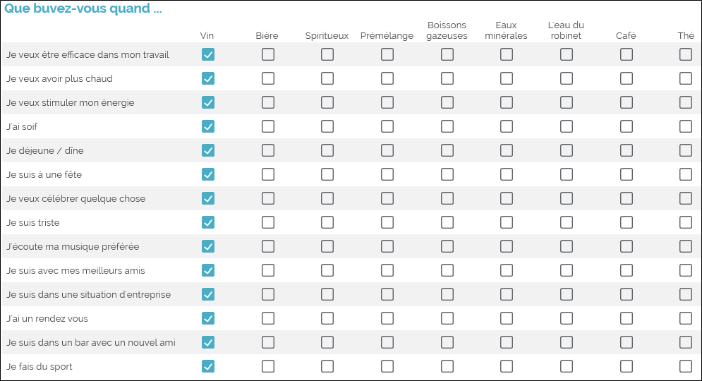
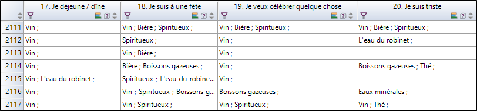

COMBINER DES VARIABLES
Cet assistant permet de créer de nouvelles variables en les combinant, suivant quatre méthodes proposées (création de variable « profils », fusion, transposition, ou concaténation). Pour ce faire :
-
Dans l’onglet Données.
-
Cliquez sur le bouton Combiner.
-
Choisissez le type de combinaison que vous voulez effectuer.

Types de combinaisons disponibles
Cet assistant vous permet de créer une nouvelle variable dont les valeurs seront les profils auxquels appartiennent les observations (par exemple pour une réponse enregistrée par un répondant Français, cette variable créée aura pour valeur « France »).
-
Sélectionnez vos profils à partir des strates de l’enquête (se référer à la partie Créer des Strates).
REMARQUE : Vous pouvez créer des strates directement à partir de cet assistant en cliquant sur .
-
Renseignez le nom de la nouvelle variable à créer.
-
Choisissez où insérer la nouvelle variable.
-
Cliquez sur Terminer.

Cet assistant permet de rassembler plusieurs variables fermées.
-
Sélectionnez les variables à fusionner.
EXEMPLE : Ici nous voulons fusionner l’âge des répondants avec leur genre (homme ou femme) pour les analyses (par exemple nous souhaitons faire des statistiques sur les hommes de plus de 50 ans).
-
Choisissez la méthode de fusion :
-
Fusion simple : les modalités de la nouvelle variable fermée multiple sont toutes celles des variables sélectionnées.
-
Fusion composée : les modalités de la nouvelle variable fermée multiple sont les modalités différentes des variables sélectionnées.
-
Fusion croisée : les modalités de la nouvelle variable fermée unique croisent les modalités des variables sélectionnées.
-
Fusion multiple : les modalités de la nouvelle variable fermée multiple sont les noms des variables sélectionnées.
-
-
Renseignez le nom de la nouvelle variable à créer.
-
Sélectionnez l'emplacement d'insertion de la variable.
-
Cliquez sur Terminer.


Transposer des variables consiste à inverser le « référentiel » sur lequel se base une réflexion.
EXEMPLE : Dans notre exemple ci-dessous, nous avons un tableau de questions qui contient des situations de boissons (quand est-ce que le répondant est susceptible de boire). Pour chaque situation, il choisit les boissons correspondantes (par exemple « Avec un bon repas », le répondant va cocher « Vin » et « Eau minérale »). 
Mais il peut être utile de non plus réfléchir en termes de situations, mais en termes de boissons.
Nous voulons donc savoir dans quelles situations les gens boivent-ils surtout du vin.

-
Sélectionnez les variables que vous souhaitez transposer.
REMARQUE : Les variables sélectionnées doivent avoir des modalités identiques.
-
Choisissez où insérer les nouvelles variables (au début ou à la fin du questionnaire).
-
Cliquez sur Terminer pour valider.
Autant de variables seront créées que le tableau de questions possède de modalités.
EXEMPLE : Dans notre exemple, les variables créées seront « Vin », « Bière » etc.) et les valeurs de ces nouvelles variables correspondront aux situations choisies par les répondants en rapport aux boissons (par exemple « Bière » pourrait avoir pour valeur « Quand je fais la fête »). 

Concaténer les textes des réponses consiste à créer une variable texte qui rassemble les contenus des réponses des variables sélectionnées.
EXEMPLE : Pour chaque image (3 au maximum) que le répondant a sélectionnée, il a rédigé une courte explication sur son choix. Nous souhaitons donc regrouper ces trois commentaires distincts en une seule et même variable.
-
Sélectionnez les variables que vous souhaitez concaténer.
-
Vous pouvez choisir d’ignorer les non-réponses (cellules vides) ou de les prendre en compte (les remplacer par des valeurs à renseigner).
-
Renseignez le nom de la nouvelle variable à créer.
-
Choisissez où insérer la nouvelle variable (au début ou à la fin du questionnaire).
-
Cliquez sur Terminer.